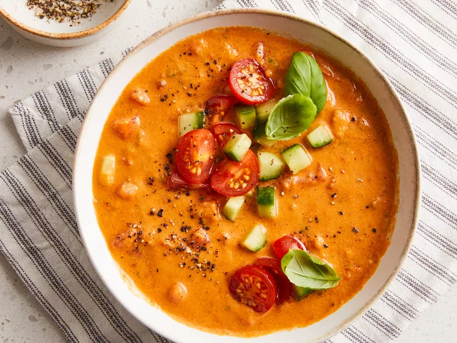

gazpacho

Cool off this summer with a refreshing gazpacho recipe! This flavorful Spanish gazpacho starts with tomatoes and cucumbers, while a jalapeño heats things up a bit.
Ingredients
- 4 large fresh tomatoes, peeled and diced
- ½ English cucumber, peeled and finely diced
- ½ cup finely diced red bell pepper
- 2 cloves garlic, minced
- ¼ cup minced green onion
- 1 teaspoon salt
steps
- Combine diced tomatoes, cucumber, bell pepper, green onion, jalapeño, and garlic in a large bowl. Stir in salt, cumin, oregano, cayenne pepper, and black pepper.
- Place cherry tomatoes, olive oil, lime juice, balsamic vinegar, and Worcestershire sauce in a blender. Cover and purée until smooth.
- Pour puréed mixture through a strainer into the tomato-cucumber mixture; stir to combine.
- Place 1/3 of the tomato mixture into the blender. Cover, turn blender on, and purée until smooth. Return puréed mixture to the remaining tomato-cucumber mixture. Stir to combine. Cover and chill in the refrigerator for 2 hours.
- Season cold soup with salt and black pepper to taste. Ladle into bowls and top with basil.